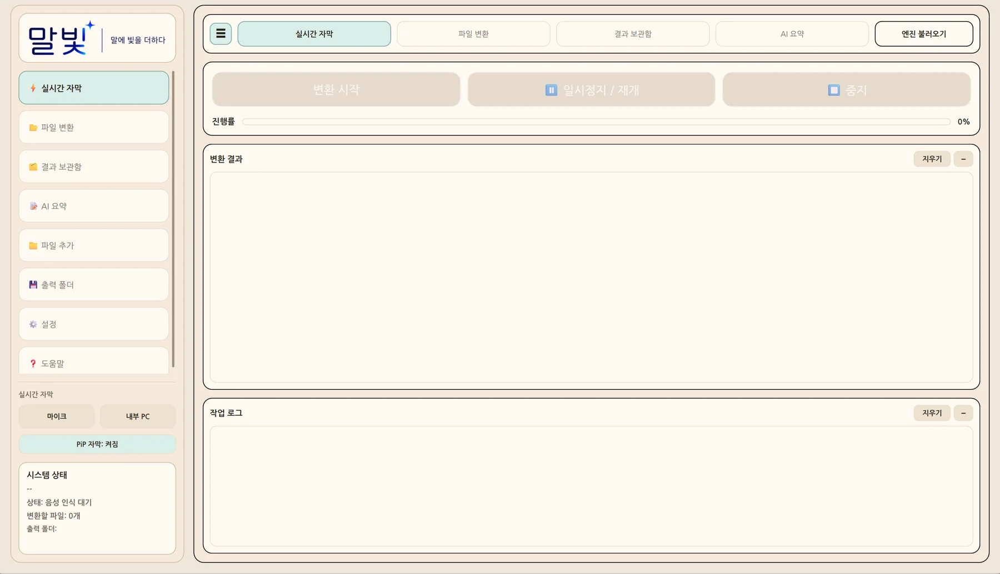

실시간 자막
음성 입력을 텍스트로 확인하고 변환 상태와 결과를 함께 살펴봅니다.
01 / WORKSPACE
말빛 소스에 포함된 실제 UI 안내 이미지를 사용했어요. 표시된 화면은 개발 버전의 일부로, 최신 실행 화면과 차이가 있을 수 있습니다.

02 / CAPABILITIES
새로운 도구를 계속 옮겨 다니기보다, 기록을 만들고 수정하고 다시 찾는 과정을 하나로 묶습니다.
음성 입력을 텍스트로 확인하고 변환 상태와 결과를 함께 살펴봅니다.
저장된 음성·영상 파일을 변환하고 자막 내용과 타임라인을 다룹니다.
변환 결과를 보관하고 파일과 기록 속 필요한 내용을 찾아봅니다.
기록을 토대로 요약과 번역 등 후속 작업을 이어갑니다.
03 / ABOUT MALBIT
말빛은 음성 자료를 다루는 데 필요한 작업과 파일 관리 경험을 함께 설계하고 있습니다. 사용자가 처리 결과를 확인하고 수정하는 과정에 집중합니다.
현재 개발 및 검증 단계입니다. 기능 제공 범위와 지원 환경은 정식 출시 시 안내될 수 있습니다. 로컬 AI 처리 지원 여부는 모델과 기능 설정에 따라 달라집니다.
contact@malbit.kr로 문의